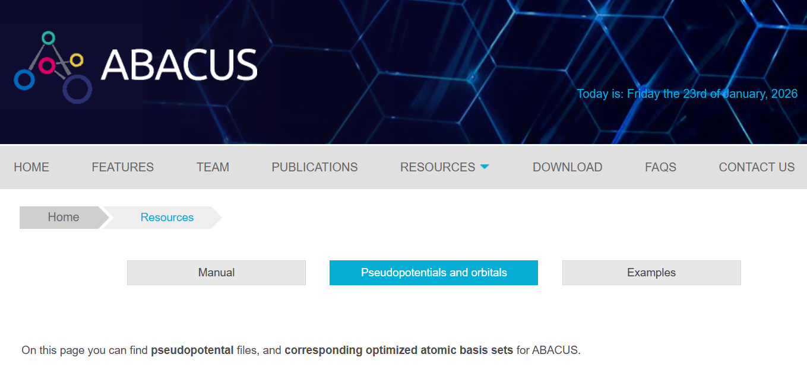
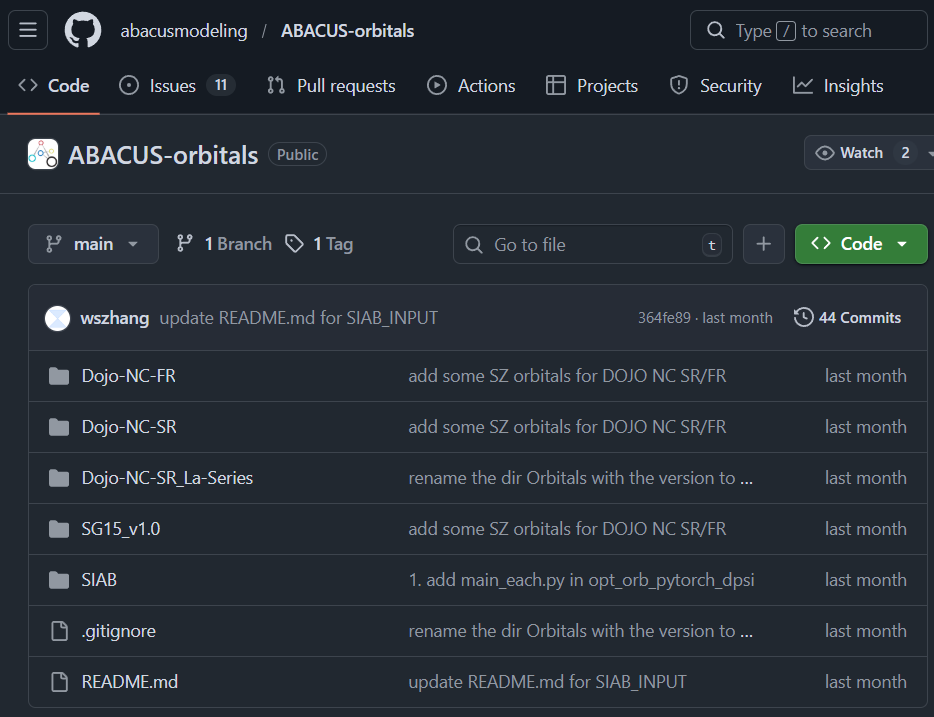

ABACUS 赝势轨道简介和资源导航
作者：刘照清，邮箱：quanmisaka@stu.pku.edu.cn
审核：陈默涵，邮箱：mohanchen@pku.edu.cn
最后更新时间：2026/02/01
一、背景
在第一性原理计算中，赝势（pseudopotential）直接决定计算过程中对内层电子的有效势描述，而基组（basis set）则直接决定计算过程中价层电子波函数展开的完备性。具体到以 ABACUS 开展第一性原理计算时，赝势与基组（平面波 PW / 原子轨道 LCAO）的选择将会直接影响计算效率、计算收敛行为、以及计算结果的可比性与可靠性。因而，在开展具体计算时，需要显式指定所用的赝势和轨道：
- 赝势指定：需要在 STRU 文件中的
ATOMIC_SPECIES部分，在指定元素类型及其摩尔质量的同时，指定其所用的赝势文件。 基组指定：需要在 INPUT 文件中指定计算所用的基组类型
basis_type为pw或lcao，并具体指定所用的基函数：pw基组下，通过在 INPUT 文件中设置平面波的动能截断上限ecutwfc来控制平面波基组的规模。注意，如果初猜波函数init_wfc设置为nao，也可以读入数值原子轨道(Numerical Atomic Orbitals, NAO)文件作为初猜波函数，从而加快电子迭代收敛速度。在接下来的 ABACUS 版本开发中，也可能会读入 NAO 轨道用于 PDOS 的计算或者 +U 方法的投影轨道（还在发展中）。lcao基组下，准备一套数值原子轨道 NAO 文件。并在 STRU 文件中的NUMERICAL_ORBITAL部分指定各元素所用的数值原子轨道基组。此时 INPUT 文件中的ecutwfc参数一定程度上代表格点密度的含义，且多数轨道文件自带ecutwfc推荐值，因此ecutwfc仍需要设置，且按照轨道文件推荐值设置即可。
比如，以下是一个 STRU 文件示例
ATOMIC_SPECIES
Al 26.9815385 Al_ONCV_PBE-1.0.upf
NUMERICAL_ORBITAL
Al_gga_7au_100Ry_4s4p1d.orb
LATTICE_CONSTANT
1.8897261258369282
LATTICE_VECTORS
0.0000000000 2.0250000000 2.0250000000
2.0250000000 0.0000000000 2.0250000000
2.0250000000 2.0250000000 0.0000000000
ATOMIC_POSITIONS
Direct
Al
0.0000000000
1
0.0000000000 0.0000000000 0.0000000000 1 1 1 mag 0.0
其中的 Al_ONCV_PBE-1.0.upf 即为 Al 元素的赝势文件，而 Al_gga_7au_100Ry_4s4p1d.orb 即为 Al 元素的数值原子轨道基组文件。在此基础上，用户可以在 INPUT 文件中，分别通过指定 pseudo_dir 和 orbital_dir ，设置赝势文件所在目录和数值原子轨道基组文件所在目录。
为便于用户了解赝势和基组，并能快速查阅 ABACUS 常用的赝势和原子轨道基组，本文对常见赝势库、轨道库与相关项目入口做集中整理，并给出必要的使用说明。
二、ABACUS 对赝势与基组的基本支持
ABACUS 同时支持模守恒（norm-conserving）与超软（ultrasoft）赝势，以模守恒赝势为主。
- 对于模守恒赝势（NCPP）：支持
UPF、UPF2、VWR、BLPS（局域赝势，适合无轨道密度泛函理论） 格式 - 对于超软赝势（USPP）：支持
UPF、UPF2格式
ABACUS 同时支持平面波基组（PW）与原子轨道基组（LCAO）。
- 使用平面波基组时，只需制定好赝势，并在 INPUT 内设置好
basis_type pw和ecutwf值即可。 - ABACUS 的数值原子轨道基组基于拟合特定赝势下的平面波基组计算的波函数结果生成，因而，当采用 LCAO 基组时，必须准备与赝势匹配的数值原子轨道（numerical atomic orbitals, NAO）文件（通常记作
orb）。建议优先使用“同一来源、同一命名体系”的赝势与轨道组合，并在目标体系上进行小规模验证。 ABACUS 的数值原子轨道基组有其对应的径向截断参数
rcut，并可按照表示完备程度分为三类：- SZ: 即 single-zeta 基组，每个原子轨道只用 1 个径向基函数表示
- DZP：即 double-zeta + single polarization 基组，每个原子轨道用 2 个径向基函数表示，并额外包含 1 个极化径向基函数。
- TZDP：即 triple-zeta + double polarization 基组，每个原子轨道用 3 个径向基函数表示，并额外包含 2 个极化径向基函数。
一般来说，上述赝势都基于 PBE 泛函下的全电子计算结果生成，而轨道库则基于相应赝势下的平面波基组计算结果生成。所以相应的赝势和轨道会带有 PBE 或 GGA 的字样。
三、可快速获取的 ABACUS 赝势轨道库
官网
ABACUS 官网 提供了一系列可快速获取和使用的赝势库和轨道库

- Dojo-NC-FR: 来自 PseudoDojo 的全相对论（full-relativistic, FR）模守恒赝势，以及对应的 DZP 轨道。这一赝势轨道库支持考虑旋轨耦合（spin-orbit coupling, SOC）的计算。
- SG15-V1.0_Pseudopotential.zip：SG15 ONCV v1.0 赝势库。
- SG15-V1.0__StandardOrbitals-V2.0.zip：基于 SG15 ONCV v1.0 赝势，在 ABACUS 第二版数值原子轨道基组方案下生成的标准轨道库。内部有针对每个元素推荐的 DZP 基组文件。
- SG15-V1.0__AllOrbitals-V2.0.zip：基于 SG15 ONCV v1.0 赝势，在 ABACUS 第二版数值原子轨道基组方案下生成的所有轨道。
- SG15-V1.0__Orbitals-V1.0.zip：基于 SG15 ONCV v1.0 赝势，在 ABACUS 第一版数值原子轨道基组方案下生成的所有轨道。目前更推荐第二版轨道库。
- Traditional_PP_Orb.zip：更旧的单投影子赝势与针对性构建的轨道构成的赝势轨道库。
其中最为常用的组合是 SG15-V1.0_Pseudopotential.zip 与 SG15-V1.0__StandardOrbitals-V2.0.zip。而对于需要考虑 SOC 的场景，则选用 Dojo-NC-FR 赝势轨道库。
赝势轨道广场
ABACUS 赝势轨道广场 (ABACUS Pseudopotential-NAO Square, APNS) 项目旨在向用户社群提供可开箱即用的赝势的与相对应的数值原子轨道捆绑包。该项目对常见的模守恒赝势和超软赝势进行了大规模、高通量的效率和精度测试，配套了多样化的测试数据，并实现了对轨道生成算法的微调，在此基础上以全电子精度为测试基准，提供了兼顾精度和效率的各元素赝势（涵盖 SG15, PseudoDojo, PD04 等）和对应轨道甄选，意图帮助 ABACUS 用户降低赝势与轨道的生成、测试成本，同时推动 ABACUS 软件生态的发展。
截至发稿，这一捆绑包不仅支持了从 H 到 Bi 的前四周期共 69 个元素，还包含了镧系元素可用的赝势轨道扩展包，使得 APNS 的覆盖范围进一步扩大到 83 个元素。其轨道分为效率基组 (efficiency) 与精度基组 (precision) 两个合集。效率基组适合用于基态性质的高效计算，推荐使用场景为：
- 结构优化
- 过渡态搜索
- 声子谱计算
- 弹性模量计算
- 势能面扫描
- 第一性分子动力学模拟
等仅需要占据态决定的性质。精度基组的推荐使用场景为：
- 高精度能量计算
- 能带计算。尤其是费米面以上能带精度要求较高时
- TD-DFT 和激发态相关计算
等需要轨道具有较高完备性，或同时需要占据态和非占据态决定的性质计算。
需要注意的是，目前版本的 APNS 捆绑包不支持考虑 SOC 的计算。
目前，APNS 赝势轨道捆绑包在科学智能广场（AIS-Square）上开放下载：https://aissquare.com/datasets/detail?pageType=datasets&name=ABACUS-APNS-PPORBs-v1%253Apre-release&id=326。同时，这一界面上会有试验版本赝势轨道捆绑包动态更新。
更多信息可见：
ABACUS-orbitals 项目
ABACUS 官方 GitHub 账户上开源开放了 ABACUS-orbitals 仓库，该仓库内提供了 PseudoDojo 赝势和 SG15 ONCV V1.0 赝势，以及基于这些赝势，以 ABACUS 第二版数值原子轨道基组方案 生成的数值原子轨道，包括 SZ, DZP, TZDP；三类。同时还包含各元素推荐的标准截断半径，PW 和 LCAO 对比的测试数据，以及用于这些轨道生成的 SIAB (Systematically Improvable Atomic-orbital Basis generator based on spillage formula) 软件库等内容。

四、可用赝势资源
ABACUS 兼容多个主流赝势库，用户也可以选择自行获取赝势资源。常用来源及获取方式如下：
| 类别 | 名称 | 地址 | 简要说明 |
|---|---|---|---|
| 模守恒 | SG15 ONCV | http://www.quantum-simulation.org/potentials/sg15_oncv/ | ABACUS 中常用的 NC 赝势集合之一 |
| 模守恒 | PseudoDOJO | https://www.pseudo-dojo.org/ | Abinit 团队维护，提供标量/全相对论版本 |
| 汇总站点 | SSSP | https://www.materialscloud.org/sssp | 面向固态体系的高质量赝势库，并配套系统测试 |
| 汇总站点 | PWmat | http://www.pwmat.com/potential-download | 提供包括 PD04 系列在内的多种赝势，包括镧系元素 |
| 汇总站点 | Quantum ESPRESSO Pseudopotentials | https://www.quantum-espresso.org/pseudopotentials | 汇总入口，覆盖多类型 UPF |
| 汇总站点 | THEOS（PSlibrary 0.3.1 等） | http://theossrv1.epfl.ch/Main/Pseudopotentials | 汇总多类赝势（含 US/NC 等）及相对论版本 |
| 特殊格式 | BLPS Library | https://github.com/PrincetonUniversity/BLPSLibrary | BLPS 格式赝势库，用于 ABACUS 的 OFDFT 计算 |
| 模守恒 | Rappe group（Opium） | https://www.sas.upenn.edu/rappegroup/research/pseudo-potential-gga.html | GGA 赝势集合（Opium 生成） |
| 模守恒 | gmatteo/pseudos_ac_she | https://github.com/gmatteo/pseudos_ac_she | 覆盖锕系与超重元素（至 120） |
| 超软 | Vanderbilt USPP | http://www.physics.rutgers.edu/~dhv/uspp/ | Vanderbilt 组发布的 USPP 集合 |
| 超软 | GBRV | https://www.physics.rutgers.edu/gbrv/ | QE 社区常用的 USPP 集合之一 |
常用于 ABACUS 计算的模守恒赝势主要来自 SG15 ONCV 、PseudoDOJO、以及 PD04 系列。
五、支持 SOC 的赝势
如何识别支持 SOC 的赝势
当进行 SOC 计算（例如在 INPUT 中设置 lspinorb=1）时，需要使用包含 SOC 信息的全相对论赝势。一个直观的检查方式是看 UPF 头部（PP_HEADER）字段：
<PP_HEADER
...
relativistic="full"
has_so="T"
...
/>
要点：
relativistic="full"表示全相对论赝势has_so="T"（或"1"）表示包含 SOC 信息- 若
lspinorb=1但赝势不含 SOC 信息，ABACUS 会在读取阶段直接报错并终止
获取这类赝势
为进行 SOC 计算，需要从以上资源中下载全相对论（FR）版本的赝势。其主要来源包括：
- PseudoDOJO：pseudo-dojo.org</u>)。各元素的 FR 赝势可在其网站上下载，对应的 FR 赝势和 ABACUS 轨道文件可在 ABACUS 官网</u>) 获取。
- SG15_ONCV：quantum-simulation.org</u>) 上也有一部分 FR 赝势。
- 其他可能的赝势来源。使用之前需要进行检查。
六、赝势生成
若用户希望自行生成赝势，可优先参考 ABACUS 中文文档教程：模守恒赝势生成方法简介
同时，也可以参考以下链接：
七、原子轨道基组生成
用户也可以按照自身需求，生成 ABACUS 的数值原子轨道。在 ABACUS 中文文档中有一系列的实践指南供参考：
轨道生成的理论背景可见参考文献[1][2]。当你在研究中使用数值原子轨道及其生成代码库时，需要引用这些参考文献。
八、BSSE 校正
使用原子轨道基组计算含不同元素体系的结合过程（如成键过程，表面吸附等）时，会存在基组重叠误差 (Basis Set Superposition Error, BSE)。为处理 BSSE 校正，ABACUS 允许在计算中引入“空原子（empty atoms）”或“幽灵原子（ghost atoms）”。具体而言：在展开 Hamiltonian 时会使用这些原子上的基组，但在构造 Hamiltonian 时不包含这些原子的离子势（ionic potentials）。
在 STRU 文件中，若元素名称包含 empty 后缀（如 H_empty、O_empty 等），则表示该原子为空/幽灵原子。这里给出一个示例，用于演示 BSSE 修正下计算水分子形成能：
参考文献
- [1] Peize Lin, Xinguo Ren and Lixin He, Strategy for constructing compact numerical atomic orbital basis sets by incorporating the gradients of reference wavefunctions, Phys. Rev. B 103, 235131 (2021).
- [2] Mohan Chen, Guang-Can Guo, and Lixin He, Systematically improvable optimized atomic sets for ab initio calculations, J. Phys.: Condens. Matter 22, 445501 (2010).
- [3] 本文内容主要参考官方文档撰写：https://abacus.deepmodeling.com/en/latest/advanced/pp_orb.html